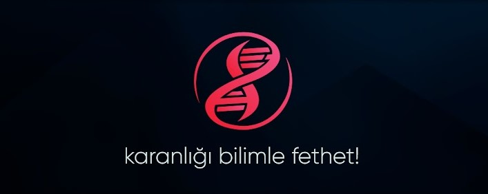
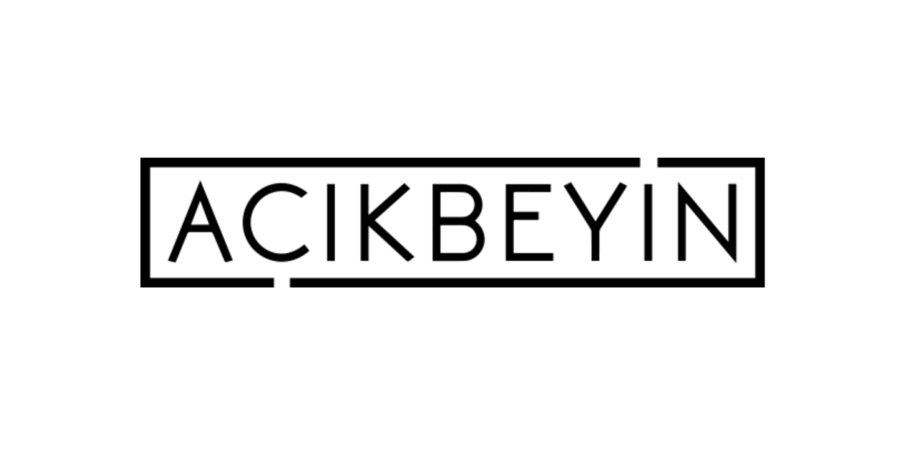
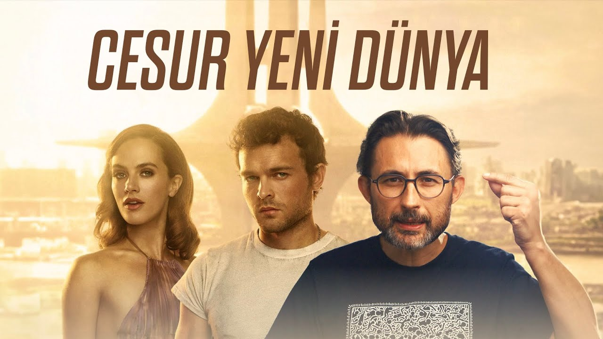
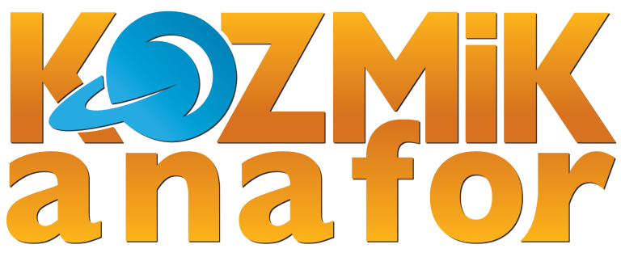
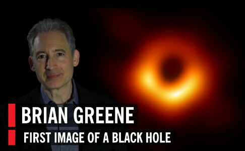
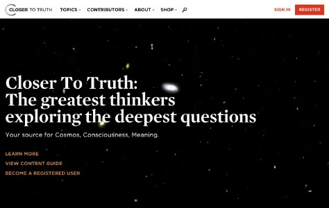

referans alınan siteler
-

evrim agacı
Yine ODTÜ çıkışlı bir evrimsel biyoloji ve popüler bilim sitesi. Gerek facebook sayfası, gerekse sitesi Türkiye’nin en nitelikli bilimsel içeriğine sahip diyebiliriz. Yayınladıkları yazıların hemen tamamı sıkı bir bilimsel disiplin içinde hazırlanıyor ve bilimin her alanında yayın yapıyorlar GİT -

açık beyin
Storyteller – Hikaye Anlatıcı GİT -

Barıs Özcan
Storyteller – Hikaye Anlatıcı GİT -
popular science türkiye
bilim sitesi GİT -

Kozmik Anafor
Türk bilim adamlarının kurduğu bilim sitesi GİT -
yalansavar
Yine ODTÜ çıkışlı bir evrimsel biyoloji ve popüler bilim sitesi. Gerek facebook sayfası, gerekse sitesi Türkiye’nin en nitelikli bilimsel içeriğine sahip diyebiliriz. Yayınladıkları yazıların hemen tamamı sıkı bir bilimsel disiplin içinde hazırlanıyor ve bilimin her alanında yayın yapıyorlar GİT -
TEDx
güzel konuşmalar(alt yazı mevcut) GİT -

world science festival
bilim sitesi(ingilizce) GİT -

closer to truth
bilim sitesi(ingilizce) GİT
-
öne çıkanlar
 6, 2023
6, 2023
-
yakın zamanda olanlar
-

yabancı yasam
3, 2023 -

GALAXY
1, 2023
-